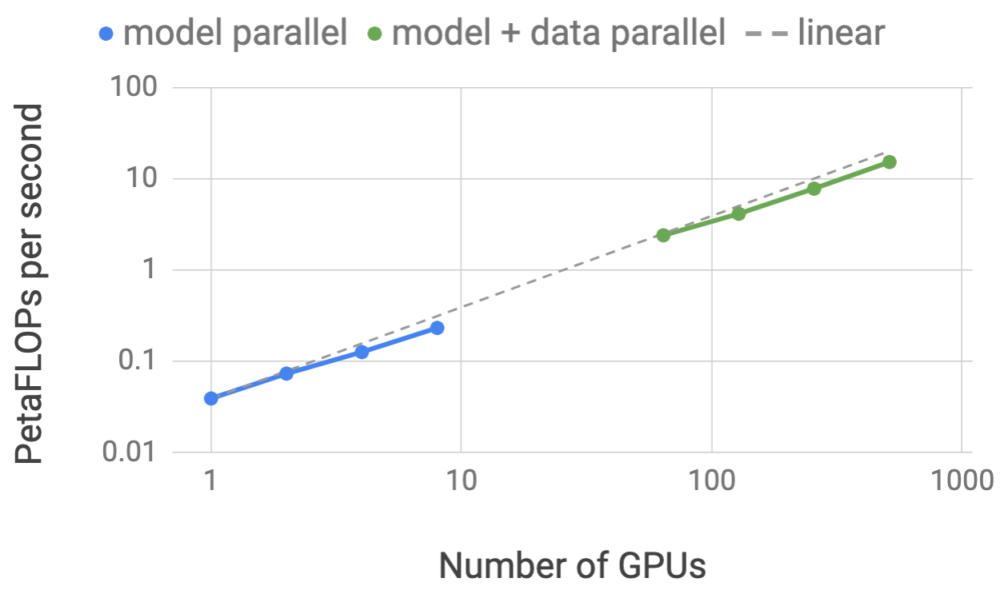
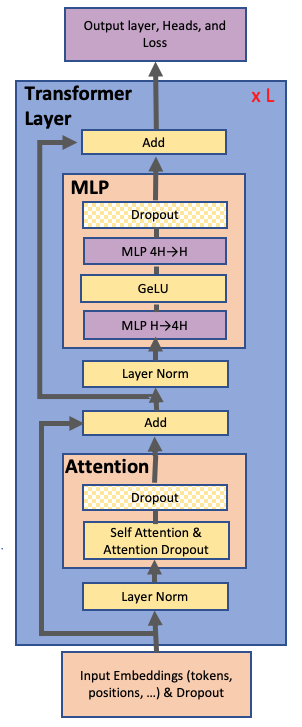

发展脉络
预训练从 CLM/MLM 目标扩展到多 token 预测、课程数据和合成数据，训练规模则由 Kaplan 经验律推进到 Chinchilla 的计算最优配比。
一个万亿参数模型单机放不下，一次前向的激活值也单机放不下。把训练拆到成百上千张卡上，不是一个选项，而是唯一出路。但「拆」的方式有五种，每种有不同的通信代价和显存收益。这一页讲清五种并行各自的原理、通信模式、显存账本，以及它们如何叠加成一个等效并行度——框架的具体实现和配置项见 训练框架与工程实现。
五种并行的本质都是把一个大的计算任务切成多份，分给不同 GPU，区别只在于「切哪个维度」。数据并行切 batch，流水线并行切层，张量并行切层内矩阵，序列并行切序列长度，专家并行切 FFN 的专家。它们可以叠加，最终等效并行度等于各维度并行度的乘积。
换个生活化的类比：一本厚书要抄完。数据并行是「找 8 个人各抄一本不同的书，抄完对一下笔记」；流水线并行是「8 个人排队，第一个人抄第 1 章，抄完传给第二个人抄第 2 章」；张量并行是「8 个人同时抄同一页，每人抄一竖列，抄完拼起来」；序列并行是「一段超长的句子拆成 8 截，每人抄一截」；专家并行是「8 个人各自擅长不同学科，来什么内容就转给对应的专家抄」。
在讨论「怎么拆」之前，先要理解「为什么非拆不可」。很多人以为显存主要被模型参数占了，其实参数只是账单里最小的一项。用最常见的「BF16 混合精度 + Adam 优化器」配置，每一个参数在显存里要留下四份账：
| 项目 | 精度 | 每参数字节 | 说明 |
|---|---|---|---|
| 模型权重（计算副本） | BF16 | 2 | 前向反向实际参与矩阵乘的那一份 |
| 梯度 | BF16 | 2 | 反向传播产出，AllReduce 的通信对象 |
| FP32 主权重 | FP32 | 4 | 优化器真正更新的那一份，避免 BF16 累加误差 |
| Adam 一阶矩 m | FP32 | 4 | 梯度的滑动平均 |
| Adam 二阶矩 v | FP32 | 4 | 梯度平方的滑动平均 |
| 合计（不含激活值） | 16 | 这就是常说的「每参数 16 字节」经验值 | |
按 16 字节/参数换算：7B 模型约需 112 GB，70B 约需 1.1 TB，405B 约需 6.5 TB。而一张 80GB 的 H100 只能装下 5B 参数左右的完整训练状态——连 7B 都放不下。这还没算激活值。
激活值是第二座大山。前向传播中每一层的中间结果都要暂存下来供反向使用，它的规模大致正比于 批大小 × 序列长度 × 隐层维度 × 层数。序列一长，注意力内部还有正比于序列长度平方的中间量（FlashAttention 正是为消除这一项而生）。在长上下文训练里，激活值经常反超参数显存成为第一大头。
五种并行分别针对账单里的不同项目下刀。下面这张思维导图先把全局关系摆出来，后面逐个展开：
数据并行是所有并行策略的基础。核心思路：每张卡上放一份完整的模型副本，各自处理不同的 batch 数据。前向各算各的，反向传播时梯度通过 AllReduce 聚合，保证所有卡的模型参数同步更新。
它的通信模式很简单：每个反向传播步骤结束时，做一次梯度的 AllReduce。现代实现普遍采用 Ring AllReduce——把梯度切成 $N$ 段（$N$ 为卡数），先做一轮 ReduceScatter（每张卡负责求和其中一段），再做一轮 AllGather（把求和结果广播回所有卡）。这样每张卡收发的数据量约为 $2\frac{N-1}{N}\Psi$，其中 $\Psi$ 是梯度总字节数。关键性质是：通信量与卡数几乎无关（$N$ 大时趋近于 $2\Psi$），所以数据并行的横向扩展性非常好。
| 阶段 | 做什么 | 每卡收发量 | 备注 |
|---|---|---|---|
| ReduceScatter | 梯度切 $N$ 段，每卡求和自己负责的那段 | $\frac{N-1}{N}\Psi$ | 环形传递，每步只与相邻卡通信 |
| AllGather | 把各卡求好的段广播回全体 | $\frac{N-1}{N}\Psi$ | 同样环形，可与前一步流水重叠 |
| 合计 | $\approx 2\Psi$ | 与卡数几乎无关，扩展性好 | |
朴素数据并行的致命问题在于每张卡都存了完整的模型参数、梯度和优化器状态——上一节算过，一个 70B 模型单卡就要 1.1 TB，显然不可能放在一张 80GB 的 H100 上。数据并行本身完全不省显存，它只是把 batch 摊开、把吞吐做大。
这就是 ZeRO 和 FSDP 出现的原因：它们在数据并行的框架内，把「参数 + 梯度 + 优化器状态」这三件套沿 DP 维度切分到不同卡上，用时再临时 AllGather 回来。代价是通信量从 $2\Psi$ 上升到约 $3\Psi$（多了一次参数 AllGather），换来显存的线性下降。具体分级和配置见 训练框架与工程实现。
还有一个常被忽略但极其常用的技巧：梯度累积（gradient accumulation）。当你想要一个 4M token 的全局 batch，但显存只够一次跑 8K token 时，可以连续跑若干个 micro-batch、把梯度累加起来，最后才做一次 AllReduce 和参数更新。
它的两个副作用值得记住：一是通信频率下降（累积 $k$ 步才通信一次，AllReduce 的开销被摊薄 $k$ 倍），这在跨节点带宽紧张时是纯收益；二是它与流水线并行的 micro-batch 是同一件事——PP 里的 micro-batch 数 $M$，本质上就是梯度累积步数。理解这一点，后面 PP 的气泡公式就会变得非常自然。
在讲切法之前，先看一张来自 Megatron-LM 论文的原图——它把「朴素模型并行」和「模型并行 + 数据并行」的差别一次讲清楚。这是理解 TP 为什么出现的起点。

新手读这张图抓三个点：① 左边是「只有模型并行」——整个模型的层被分到两张卡上（卡 1 算前半层、卡 2 算后半层），数据只有一份，两卡各算各的层，前向的中间结果在卡间传递。它的毛病是：卡 1 算完第 1-2 层传给卡 2 之前，卡 2 一直在空等；而且每次只处理一个 batch，整张卡只干自己那一段活。② 右边是「模型并行 + 数据并行」——把「层切分」复制成两套（一套处理 batch 1，一套处理 batch 2），每张卡虽然只持有模型的一部分，但都在持续干活，没有空转。③ 关键结论：图下方那句话——「模型并行 + 数据并行」让每张卡的计算量不变、通信量最小。这正是「先 TP 再 DP」组合的原始动机。
注意图里的切法是按层切，也就是「把层分成两组」——这是论文为了讲清楚「并行」概念画的示意图。真正工业界用到的 Megatron 式张量并行，比这个更细：它切的是单个层内部的矩阵乘（而不是整层），这也是本小节下面要展开的内容。图上「每张卡只持有一部分权重」这个直觉，两种切法是一致的。
张量并行把单个层内的矩阵乘法拆到多张卡上。以一个线性层 $Y = XW$ 为例，可以把权重矩阵 $W$ 按列切分（Column Parallel），每张卡持有 $W$ 的一部分列，各自算出 $Y$ 的一部分，然后通过 AllGather 拼成完整的 $Y$。也可以按行切分（Row Parallel），每张卡算出部分结果后通过 AllReduce 求和。
先看论文里的第二张原图。它把「一个 Transformer 层在 Megatron 式张量并行下怎么切分、哪里需要通信」画得明明白白——这张图是理解 TP 在 Transformer 上具体落法的关键。

这张图信息密度高，新手按顺序读四块：① 最下面一行是输入 X，在每个 TP 卡上都有一份完整副本（论文里叫「f 的输入」，即 f 做一次 Identity + 复制，让每张卡都拿到同样的 X）。② 注意力块：QKV 投影合在一个矩阵里按列切——每个注意力头天然是独立的，把不同的头分到不同卡上，每卡算自己的头；Softmax 和加权求和都在卡内完成，不需要通信；最后输出投影按行切，在「g」这个点做一次 AllReduce 把部分和加起来，得到完整输出。③ MLP 块：第一个线性层按列切（每卡算不同的隐藏单元，GeLU 逐元素、无需通信），第二个线性层按行切，再在「g」做一次 AllReduce。④ 图上标着 f / g 的方块就是论文定义的「一对互为逆的通信操作」——f 把张量切成 N 份或复制，g 做对应的 AllReduce，两者配对使用让通信次数最小化。数一下：整层前向只有 2 次 AllReduce（注意力块 1 次、MLP 块 1 次）。
把这张图和上面 Figure 1 连起来看，Megatron 的设计哲学就很完整了：Figure 1 回答「为什么要并行」（显存与吞吐），Figure 2 回答「Transformer 该怎么切」（每层仅两次通信）。前者是动机，后者是方案。读懂了这两张图，「TP 为什么只适合节点内」「为什么 TP 度要能整除注意力头数」这些问题就都有了答案。
朴素地切每一个矩阵，会导致每个矩阵乘后面都跟一次通信。Megatron-LM 的关键洞察是：把 Column Parallel 和 Row Parallel 配对使用，中间那次通信可以完全省掉。
以 FFN 为例，它是两个连续的 GEMM：$Y = \text{GELU}(XW_1)W_2$。如果 $W_1$ 按列切、$W_2$ 按行切，那么第一个 GEMM 的输出（$Y$ 的部分列）正好就是第二个 GEMM 所需要的输入（$X$ 的部分行）——数据已经在正确的卡上了，中间不需要任何通信。只在第二个 GEMM 之后做一次 AllReduce 求和即可。而且 GELU 是逐元素运算，按列切完全不影响结果，这一点也很关键。
注意力层同理：QKV 投影按列切（多头天然可以分到不同卡，每卡负责若干个完整的头），输出投影按行切，中间的 softmax 和加权求和都在各卡本地完成。于是一个 Transformer 层前向只需 2 次 AllReduce（注意力块 1 次、FFN 块 1 次），反向对称地再来 2 次，合计 4 次。
| 模块 | 第一个矩阵 | 第二个矩阵 | 中间是否通信 | 块末通信 |
|---|---|---|---|---|
| FFN | $W_1$ 按列切 | $W_2$ 按行切 | 不需要（GELU 逐元素） | 1 次 AllReduce |
| 注意力 | QKV 按列切（按头分） | 输出投影按行切 | 不需要（头内自洽） | 1 次 AllReduce |
| Embedding | 词表维度切分 | — | 1 次 AllReduce | |
| LayerNorm | 不切，各卡冗余计算 | — | 0（除非配合 SP） | |
张量并行的通信发生在每一层的前向和反向，频率远高于数据并行。每次 AllReduce 的数据量约为 $b \times s \times h$ 个激活元素（批大小 × 序列长度 × 隐层维度），一个 80 层的模型一步就要做 320 次集合通信。因此它对通信带宽和延迟都极度敏感，通常只在 NVLink 互联的同一节点内（如一台 8 卡 H100 机器）使用。跨节点用 TP 会因网络带宽不足严重拖慢训练——这几乎是并行配置里最硬的一条规则。
流水线并行把不同的层分配到不同的卡上。GPU 1 处理第 1-10 层，GPU 2 处理第 11-20 层，以此类推。数据像流水线上的产品一样从第一组层流到最后一组层。
朴素流水线的问题是气泡（bubble）：当 GPU 1 在处理第一个 micro-batch 时，GPU 2 到 GPU N 都在空等。为了压缩气泡，实际做法是把一个 mini-batch 切成多个 micro-batch，让不同 GPU 同时处理不同的 micro-batch，这就是 GPipe 和 1F1B（one-forward-one-backward）调度策略。
把时间轴摊开看会更清楚。下面这张时序图展示 4 个流水线阶段在 1F1B 调度下的行为：先是一段「填充期」让流水线灌满，然后进入稳态——每个阶段交替做一次前向和一次反向，最后是一段「排空期」。
即便如此，流水线开头和结尾仍有一段气泡无法消除。气泡占比近似为 $(P-1)/M$，其中 $P$ 是流水线阶段数、$M$ 是 micro-batch 数。举例：$P=8$、$M=8$ 时气泡率高达 $7/8 = 87.5\%$，几乎全在空转；把 $M$ 提到 64，气泡率降到 $7/64 \approx 11\%$；提到 256 则约 2.7%。经验法则是 $M \geq 4P$，最好 $M \geq 8P$。
| 调度策略 | 气泡率 | 激活值显存 | 代价 |
|---|---|---|---|
| GPipe（全前向后全反向） | $(P-1)/M$ | $O(M)$ 个 micro-batch 的激活 | 显存压力大，$M$ 提不上去 |
| 1F1B（交替前反向） | $(P-1)/M$ | $O(P)$，显著更省 | 调度实现复杂一些 |
| Interleaved 1F1B（每卡持 $v$ 段不连续的层） | $(P-1)/(M \cdot v)$ | 与 1F1B 同量级 | 通信次数增加 $v$ 倍 |
| Zero-Bubble 类方案（拆分反向） | 理论可趋近 0 | 需额外缓存权重梯度 | 实现复杂，框架支持有限 |
Interleaved 1F1B 值得单独说一句：它让每张卡持有多段不连续的层（比如 GPU 1 同时负责第 1-5 层和第 21-25 层），相当于把流水线「折叠」了 $v$ 次，气泡率再降 $v$ 倍。代价是点对点通信次数也变成 $v$ 倍——所以它在节点内高带宽环境下收益明显，跨节点时要谨慎评估。
流水线并行的通信量很小——只在相邻阶段之间传递激活值和梯度，单次传输大小约为 $b_{\text{micro}} \times s \times h$，而且是点对点的 send/recv，不是集合通信。它最适合跨节点使用，因为节点间带宽远低于节点内，正好匹配 PP「低通信量、高延迟容忍」的特点。
当上下文窗口从 4K 扩展到 128K 甚至 1M，序列维度本身就成了显存瓶颈——激活值正比于序列长度，注意力内部的中间量还正比于序列长度的平方。序列并行把一条长序列切成多段，分到不同卡上各自处理。
这里要区分两种常被混为一谈的东西，它们解决的问题不同：
| 名称 | 切的是什么 | 解决什么 | 通信 |
|---|---|---|---|
| Megatron 式序列并行 | TP 没能切走的那部分——LayerNorm、Dropout、残差处的激活 | 补上 TP 的显存短板，与 TP 共用同一组卡 | 把 TP 的 AllReduce 拆成 AllGather + ReduceScatter，总量不变 |
| 上下文并行 / Ring Attention | 整条序列，包括注意力的 Q/K/V | 让单卡放不下的超长序列成为可能 | 环形传递 K/V 分块，量正比于序列长度 |
第一种的思路很精巧：TP 切走了矩阵乘的显存，但 LayerNorm、Dropout 这些逐元素操作在每张卡上是冗余重复的，它们的激活值仍然是完整尺寸。既然这些操作在序列维度上互相独立，就干脆沿序列切开。更妙的是，原本 TP 块末的那次 AllReduce，可以等价地拆成「ReduceScatter（进入序列并行区）+ AllGather（回到张量并行区）」，总通信量与原来完全相同——白赚一份显存。
第二种才是真正让百万上下文成为可能的技术。注意力是全局操作——序列上的每个位置都需要看到所有其他位置，直接切段会破坏这个全局性。Ring Attention 的做法是让持有不同序列分块的卡围成一个环，把各自的 K/V 分块依次传给下一张卡；每张卡在收到一个新分块时就用它更新自己的注意力累加结果，转满一圈后每个位置就都「见过」了全序列。这与 FlashAttention 的在线 softmax 分块累加是同一套数学，只是把分块从 SRAM 层面搬到了 GPU 之间。
sequence_parallel 和 context_parallel 两个开关时别搞混。
专家并行专门为 MoE 混合专家 架构设计。它把不同的专家分配到不同 GPU 上——每张卡只存放和计算一部分专家。路由器决定每个 token 去哪张卡，于是需要一个 All-to-All 通信：先把 token 发到目标专家所在的卡，算完后再把结果发回来。
All-to-All 是五种并行里最难受的通信原语：它不像 AllReduce 那样可以用环形算法把带宽需求摊平，而是每张卡都要给其他所有卡发一份不同的数据。通信量正比于「本卡 token 数 × top-k × 隐层维度」，且对全互联拓扑要求很高。在一个 MoE 层里要做两次（分发一次、回收一次），一个 60 层的 MoE 模型一步前向就是 120 次 All-to-All。
专家并行的关键挑战是负载均衡：如果路由器倾向于把大部分 token 都发给少数几个「明星专家」，这些专家所在的卡会成为瓶颈，其他卡空转。而且 All-to-All 是同步的——所有卡必须等最慢的那张卡算完才能进入下一步，所以负载不均的惩罚是全局性的，不是局部的。解决方案包括辅助负载均衡损失、容量因子限制以及无辅助损失均衡方案（详见 MoE 混合专家）。
专家并行与数据并行可以叠加：同一组专家复制到多个副本（数据并行维度），每个副本内部用 EP 分布专家。注意此时注意力层走 DP/TP、FFN 层走 EP，同一个模型的不同部分用了不同的并行拓扑，这是 MoE 训练配置里最容易搞错的地方。
真实的大模型训练不是选一种并行，而是把五种叠加起来。一个典型的千卡训练配置可能是：8 卡节点内用 TP=4 + SP=2，节点间用 PP=4 + DP=32，再叠加 EP=8（如果用 MoE）。等效并行度为各维度之积。
理解叠加的正确心智模型是「设备网格」（device mesh）：把 $W$ 张卡看成一个多维数组，每个维度对应一种并行。一张卡的全局 rank 可以唯一分解成一组坐标 $(d_{\text{dp}}, d_{\text{pp}}, d_{\text{tp}})$，而每种并行的「通信组」就是固定其他坐标、只让某一维变化所形成的那一列卡。
# 设备网格：把全局 rank 分解成各并行维度的坐标
# 维度顺序决定了哪种并行落在相邻的卡上（相邻 = 通常在同一节点内 = 带宽高）
# 这里用 (dp, pp, tp) 的顺序，tp 变化最快 -> TP 组内的卡 rank 连续 -> 落在同一节点
def build_mesh(world_size, tp, pp):
assert world_size % (tp * pp) == 0, "world_size 必须能被 tp*pp 整除"
dp = world_size // (tp * pp)
return {"dp": dp, "pp": pp, "tp": tp}
def rank_to_coord(rank, mesh):
tp = mesh["tp"]; pp = mesh["pp"]
tp_i = rank % tp # 最内层：张量并行
pp_i = (rank // tp) % pp # 中间层：流水线阶段
dp_i = rank // (tp * pp) # 最外层：数据并行副本
return dp_i, pp_i, tp_i
def group_members(rank, mesh, axis):
"""返回与 rank 同处一个通信组的所有 rank（沿 axis 轴变化）"""
dp_i, pp_i, tp_i = rank_to_coord(rank, mesh)
tp = mesh["tp"]; pp = mesh["pp"]; dp = mesh["dp"]
def to_rank(d, p, t):
return d * tp * pp + p * tp + t
if axis == "tp":
return [to_rank(dp_i, pp_i, t) for t in range(tp)]
if axis == "pp":
return [to_rank(dp_i, p, tp_i) for p in range(pp)]
if axis == "dp":
return [to_rank(d, pp_i, tp_i) for d in range(dp)]
raise ValueError(axis)
mesh = build_mesh(world_size=64, tp=8, pp=4) # dp 自动算出 = 2
print(mesh) # {'dp': 2, 'pp': 4, 'tp': 8}
print(rank_to_coord(11, mesh)) # (0, 1, 3)
print(group_members(11, mesh, "tp")) # [8..15] 同一节点内的 8 张卡
print(group_members(11, mesh, "pp")) # [3, 11, 19, 27] 跨节点
这段代码里最重要的一行是坐标分解的顺序。让 tp 变化最快，意味着同一个 TP 组的 8 张卡 rank 连续（如 8~15），而集群里连续的 rank 通常就在同一台机器上、由 NVLink 互联。反过来，如果把 dp 放在最内层，TP 组就会跨节点——配置一字之差，训练速度可能差三倍。真实框架的 device mesh 抽象做的就是这件事，具体 API 以官方文档为准。
| 并行策略 | 切的维度 | 通信模式 | 通信频率 | 省的显存 | 适合的互联层级 |
|---|---|---|---|---|---|
| 数据并行 DP | batch | AllReduce | 每步反向一次 | 0（配 ZeRO 后切三件套） | 节点间（高容忍） |
| 张量并行 TP | 层内矩阵 | AllReduce / AllGather | 每层前向+反向 | 参数 + 部分激活 | 节点内 NVLink（带宽敏感） |
| 流水线并行 PP | 层 | 点对点 send/recv | 每阶段边界 | 参数 + 激活（按层分摊） | 节点间（低通信量） |
| 序列并行 SP | 序列长度 | AllGather + ReduceScatter | 每层前向+反向 | 长序列激活值 | 节点内或高速互联 |
| 专家并行 EP | FFN 专家 | All-to-All | 每个 MoE 层 | 专家权重 | 节点间（需全互联） |
面对五个旋钮，实践中的调法是有顺序的。下面这条决策路径来自「先保证放得下，再追求跑得快」的基本原则：
把这个流程量化成一个能跑的估算脚本，能省掉大量试错。核心是把单卡显存拆成四项，看总和是否低于硬件上限：
GB = 1024 ** 3
def per_gpu_memory(params_b, layers, hidden, seq, micro_bs,
tp=1, pp=1, dp=1, zero_stage=0, recompute="none"):
"""粗略估算单卡显存占用（GB）。数量级参考用，真实值以 profiler 为准。"""
P = params_b * 1e9
# 1) 模型状态：BF16 权重2 + BF16 梯度2 + FP32 主权重4 + Adam m/v 各4 = 16 字节/参数
# TP 与 PP 直接把参数切开；ZeRO 沿 DP 维再切
p_shard = P / (tp * pp)
weight_bytes = 2 * p_shard
grad_bytes = 2 * p_shard
optim_bytes = 12 * p_shard
if zero_stage >= 1: optim_bytes /= dp
if zero_stage >= 2: grad_bytes /= dp
if zero_stage >= 3: weight_bytes /= dp
state = weight_bytes + grad_bytes + optim_bytes
# 2) 激活值：每层每 token 的中间量粗估为 c 倍 hidden，BF16 存储
# 这里 c 取一个经验常数，不同实现差异很大
c = 20
layers_here = layers / pp
act = c * micro_bs * seq * hidden * layers_here * 2 / tp
if recompute == "full": act *= 0.05 # 只存每层入口，反向时重算
elif recompute == "selective": act *= 0.35 # 只重算注意力等访存密集部分
# 3) 通信缓冲与碎片，按经验留出余量
overhead = 4 * GB
return (state + act) / GB + overhead / GB
cfg = dict(params_b=70, layers=80, hidden=8192, seq=8192, micro_bs=1)
for tp, pp, z in [(1, 1, 0), (8, 1, 0), (8, 4, 1), (8, 4, 3)]:
m = per_gpu_memory(dp=8, tp=tp, pp=pp, zero_stage=z, recompute="selective", **cfg)
print(f"tp={tp} pp={pp} zero={z} -> {m:7.1f} GB "
f"{'放得下' if m < 80 else '超了'}")
这个脚本不追求精确——激活值那个常数 $c$ 在不同实现里能差两倍——但它足以在提交千卡作业之前筛掉明显不可行的配置，把候选从几十个压到三五个，再用小规模实测挑最优。真正的精确核算方法见 FLOP、显存核算与性能剖析。
假设要训练一个 405B 参数的模型，序列长度 8K，使用 2048 张 H100。一个可能的配置：
等效并行度 = $8 \times 8 \times 32 = 2048$，刚好用满 2048 张卡。每张卡上的有效参数量约为 $405\text{B} / (8 \times 8) \approx 6.3\text{B}$，按 16 字节/参数算是 101 GB——仍然超过 80GB，所以还必须叠加 ZeRO-1 把优化器状态沿 DP 维切开：$12 \times 6.3\text{B} / 32 \approx 2.4$ GB，加上权重和梯度的 $4 \times 6.3\text{B} = 25$ GB，模型状态降到约 27 GB，剩下的留给激活值。
micro-batch 数怎么定？$P=8$ 要求 $M \geq 32$ 才能把气泡压到 20% 以内，$M=64$ 时气泡约 11%。假设每个 micro-batch 是 1 条 8K 序列，那么一个 DP 副本一步处理 $64 \times 8\text{K} = 512\text{K}$ token，32 个副本合计约 1600 万 token 的全局 batch——这个量级已经偏大，可能需要减小 $M$ 或 DP 度来控制，这就是「显存、气泡、batch 大小」三者互相牵制的典型场景。
如果是 MoE 模型，还需要叠加 EP。例如 256 个路由专家分布在 32 张卡上，每卡 8 个专家，则 EP = 32。注意 EP 通常复用 DP 或 TP 的卡而不是额外占用——即 FFN 层按 EP 拓扑通信、注意力层按 TP/DP 拓扑通信，总卡数不变。把 EP 简单乘进等效并行度是常见的误解。
这些数字仅说明计算方法，实际配置需要根据显存上限、通信带宽和 MFU（模型算力利用率）反复调优。框架层面如何落地这些配置，见 训练框架与工程实现。
这两个性质常被混淆，但它们决定了 TP 和 PP 完全不同的扩展行为，值得单独辨析。
TP 的通信量：与 TP 度无关。 一次 AllReduce 的对象是激活张量，形状为 $b \times s \times h$，与你把权重切成几份没有关系。用 Ring AllReduce 时每卡收发约 $2\frac{N-1}{N} \cdot bsh$ 字节，$N$ 增大时趋近常数 $2bsh$。所以从 TP=2 加到 TP=8，通信总量几乎不变，但计算被摊薄到 4 倍的卡上——计算通信比在恶化。这才是 TP 扩不上去的真正原因：不是通信变多了，而是计算变少了，通信占比自然上升。
PP 的气泡：与 PP 度线性相关。 气泡率 $(P-1)/M$ 里 $P$ 在分子上，阶段数翻倍气泡就翻倍。要抵消它只能同步把 $M$ 翻倍，而 $M$ 又受全局 batch 大小的约束（$M \times \text{micro-bs} \times \text{DP} = \text{全局 batch}$）。当模型规模上去、DP 度也大时，$M$ 很容易顶到天花板，此时再加 PP 就是纯亏。
推论。 两者的扩展瓶颈来源不同，所以正确的做法是都用一点，谁都别用满：TP 取 4 或 8 吃掉节点内带宽红利，PP 取 4 到 16 摊开层数，剩下的规模全部交给扩展性最好的 DP。这就是为什么几乎所有公开的千卡配置都长得很像。
顺带一提，这也解释了 Interleaved 1F1B 为什么值得：它在不增加 $P$ 的前提下把气泡除以 $v$，相当于绕开了「$M$ 有上限」这个约束。代价是通信次数变成 $v$ 倍，所以只在节点内高带宽时划算。
把 DP 理解成「每卡一份完整状态」后，ZeRO 与 FSDP 的差别就可以落到同一张账本上：令 $W$、$G$、$O$ 分别表示参数、梯度和优化器状态，$D$ 为数据并行组大小。朴素 DP 每卡保存 $W+G+O$；分片策略则把其中一部分按 DP 维度切成 $1/D$，计算某一层时再临时聚合。
| 方案 | 每卡常驻状态（理想化） | 关键通信时机 | 优点 | 主要代价/限制 |
|---|---|---|---|---|
| 朴素 DP | $W+G+O$ | 反向结束 AllReduce 梯度 | 实现最简单、通信路径成熟 | 完全不省模型状态显存 |
| ZeRO-1 | $W+G+O/D$ | 优化器更新前后同步分片状态 | 通常是最小改动的显存收益 | 参数和梯度仍有完整副本 |
| ZeRO-2 | $W+G/D+O/D$ | 反向过程中 ReduceScatter 梯度，更新后同步 | 进一步降低梯度显存 | 梯度归约与累积语义更需小心 |
| ZeRO-3 | $W/D+G/D+O/D$ | 按参数分片在模块前 AllGather、用完后释放/重分片 | 模型状态近似按 $D$ 线性切分，可训练更大模型 | 参数通信频繁，需预取、重叠和良好拓扑 |
| FSDP FULL_SHARD | 与 ZeRO-3 同量级：参数、梯度、优化器状态都分片 | 按 FSDP wrapping 单元 AllGather 参数，反向后 ReduceScatter 梯度 | PyTorch 原生模块封装，支持 mixed precision、CPU offload 等 | wrap 粒度决定峰值显存与通信次数；模块状态必须保持一致 |
面试时不要只背「ZeRO-3 = FSDP」。两者的状态切分目标相近，但抽象层不同：DeepSpeed ZeRO 常以优化器/训练引擎为中心，FSDP 以模块 wrapping 为边界，在进入模块前聚合参数、离开后释放。FSDP 的 SHARD_GRAD_OP、HYBRID_SHARD 等模式还允许只在节点内分片、节点间做复制或较少通信；选择时应同时看模型状态、wrap 粒度和网络拓扑。参见 DeepSpeed ZeRO 官方教程 与 PyTorch FSDP 文档。
一个可迁移的选型顺序是：先用 TP/PP/EP 解决「单副本放不下」的问题，再用 DP 扩吞吐，最后用 ZeRO/FSDP 压状态显存。并行维度不是简单相乘：MoE 的 EP 通常复用 TP 或 DP 的设备组，不能把 EP 盲目再乘一次。
| 并行维度 | 典型通信 | 首选链路 | 跨节点判断 | 常见决策 |
|---|---|---|---|---|
| TP/SP | 每层 AllReduce、AllGather、ReduceScatter | NVLink/NVSwitch | 跨节点会把延迟乘到每层，通常避免 | TP 不超过单节点卡数；长序列顺手开 SP |
| PP | 相邻 stage 的激活/梯度 send/recv | 高速 IB/RoCE 即可 | 通信频率低、可跨节点，但需均衡 stage | 显存仍不够时加 PP，并提高 micro-batch |
| DP + ZeRO/FSDP | 梯度 ReduceScatter、参数/状态同步 | 节点间网络可承受 | DP 组越大，带宽与同步尾延迟越关键 | 剩余卡优先给 DP，控制 global batch |
| EP | 每个 MoE 层 dispatch/combine All-to-All | 全互联 NVSwitch 或高质量 IB | 跨节点前先测 all-to-all，有热点就不要盲目扩大 | EP 与 TP/DP 复用 mesh；监控 token drop 和专家方差 |
粗略判断通信是否会成为瓶颈，可用「通信时间 ÷ 计算时间」做第一版筛选：$t_{comm}\approx V/B_{eff}+n_{collective}L$。其中 $V$ 是本步通信字节数，$B_{eff}$ 是实测有效带宽，$L$ 是单次集合通信延迟。TP 的 $n_{collective}$ 随层数增长，PP 的 $V$ 较小且可流水，DP 则通常只在同步点出现。正式结论应来自 NCCL profiler 与实测，而不是只看标称带宽；集合通信语义和调优入口见 NCCL Collectives 文档。
| 名词 | 定义 | 与其他量的关系 |
|---|---|---|
| micro-batch | 一次送入流水线、单次前向/反向处理的最小 batch | PP 调度的基本颗粒；每个 micro-batch 通常产生一份梯度贡献 |
| gradient accumulation steps（$A$） | 多少个 micro-batch 梯度累加后才更新一次参数 | 无 PP 时可直接理解为连续 $A$ 个 micro-batch；有 PP 时常与 $M$ 相关但不一定相等 |
| global batch | 一次 optimizer update 覆盖的全局样本/ token 数 | $B_{global}=B_{micro}\times A\times DP$（按 token 计时还要乘每条序列长度） |
| pipeline micro-batches（$M$） | 一次流水线 flush 中灌入的 micro-batch 数 | 1F1B 的近似 bubble 比例为 $(P-1)/M$；$M$ 太小会让卡空等 |
算例：$DP=8$，每卡每次处理 $B_{micro}=2$ 条、每条 $8192$ token，梯度累积 $A=16$，则一次更新的全局 token 数为 $2\times8192\times16\times8=2{,}097{,}152$（约 2.1M tokens）。若再使用 $PP=P=8$，选择一次 flush 的 $M=64$ 个 micro-batch，则 bubble 近似为 $(8-1)/64=10.94\%$；此时每个 DP 副本在一个 update 内需安排的 micro-batch 数、梯度累积语义和框架的 virtual pipeline 配置必须对齐，不能只把 $M$ 当成「随便加大的 batch」。当目标 global batch 固定时，增大 DP 或 $B_{micro}$ 会反向压缩可用的 $A/M$，因此气泡、激活显存和收敛 batch 是同一个约束系统。GPipe 对 micro-batch/流水线的原始定义见 GPipe 论文。
设本地输入 token 数为 $T$、专家数为 $E$、路由 top-$k$、容量因子为 $c$。常见实现按每个专家预留容量槽，单专家容量可粗略写为 $C=\lceil c\cdot T\cdot k/E\rceil$；$c$ 越小显存和通信 buffer 越省，但越容易出现 token 超出容量。超出的 token 可能被丢弃、走 residual，或在实现允许时 reroute；三者对训练行为不同，必须查框架语义，不能把「capacity factor=1」理解成没有损失。Switch Transformer 对 capacity factor、token dropping 与 top-1 路由有清晰讨论，见 Switch Transformers 论文。
| 现象 | 根因 | 观测指标 | 处理顺序 |
|---|---|---|---|
| 少数专家满载、其他专家空闲 | 路由偏置或负载均衡损失不足 | 每专家 token histogram、max/mean load | 先检查 router logits/辅助损失，再调 capacity factor |
| token drop 上升、loss 变差 | 容量槽不足或跨节点拥塞导致有效容量下降 | dispatch 前后 token 数、drop rate、每层每 rank 统计 | 提高 $c$、降低 top-$k$ 或改善均衡；同时核对 residual 语义 |
| All-to-All 尾延迟很长 | 消息碎片多、拓扑不匹配、某 rank 专家热点 | all-to-all effective bandwidth、p95/p99、rank 时间线 | 合并小消息、重排 EP 组、把热点专家复制/迁移 |
| 吞吐忽高忽低 | 不同 batch 的路由分布波动 | step-level expert load variance | 固定随机种子做对拍，再评估 router noise 与 capacity |
All-to-All 需要同时看平均负载和最慢专家：同步 MoE 层的 step 时间近似由最慢 rank 决定。一个简单的健康指标是 $\text{imbalance}=\max_e(load_e)/(\operatorname{mean}_e load_e+\epsilon)$；它不是统一标准，但能快速定位「平均吞吐正常、尾部 rank 已拖垮全局」的问题。GShard 对自动分片和专家路由的系统设计可参见 GShard 论文。
推荐把这些指标写进每一步或每 N 步的结构化日志，而不是只依赖 nvidia-smi。PyTorch profiler 的通信与算子分析入口见 PyTorch Profiler 文档；NCCL 调试变量与诊断方式见 NCCL Environment Variables。
# 伪代码：先定位单卡峰值，再判断是哪一类并行拖慢了训练
for step in train_steps:
stats = profiler.snapshot() # peak_allocated、reserved、通信与 kernel 时间
if stats.peak_allocated > 0.9 * gpu_memory:
if stats.activation_bytes > stats.model_state_bytes:
enable("selective_recompute")
reduce("micro_batch")
elif stats.model_state_bytes > 0.7 * gpu_memory:
enable("ZeRO-3_or_FSDP_FULL_SHARD")
increase("TP_or_PP_only_if_topology_allows")
if stats.comm_ratio > 0.3:
assert tp_group_is_single_node()
overlap("collective", "backward_compute")
if stats.pipeline_bubble > 0.15:
increase("pipeline_micro_batches")
check("stage_time_variance")
if stats.moe_drop_rate > 0 or stats.expert_imbalance > 1.5:
increase("capacity_factor")
tune("load_balance_loss_or_router")
题目：用 80GB H100 训练 70B dense Transformer，序列长度 128K，要求可扩展到多节点，如何设计并行与验证方案？下面是面试中可落地的回答框架，数字是估算起点，不是固定答案。
问：为什么不直接 TP=64？ 答：TP 每层都要集合通信，跨节点会把高频激活通信放到低带宽网络；通常用节点内 TP，跨节点改用 PP/DP。
问：ZeRO-3 和 PP 能否同时用？ 答：可以，PP 先按层切副本，ZeRO/FSDP 再沿 DP 组切每个 stage 的训练状态；要重新核对参数 AllGather 峰值与通信组。
问：增大 micro-batch 一定更快吗？ 答：不一定。它能降低 $(P-1)/M$ bubble，但会增加激活显存和 global batch；超过硬件或收敛甜点区后反而变差。
问：MoE 的 EP 越大越好吗？ 答：不是。EP 减少单卡专家状态，却增加 All-to-All 路径和负载尾延迟；先用实测 all-to-all 带宽、token drop 和专家负载方差决定。
五种并行不是一次设计出来的，而是被一个个具体瓶颈逼出来的。理解这条时间线，有助于判断下一个瓶颈会在哪里：
看清这条线索会发现一个规律：显存瓶颈被逐个消灭之后，剩下的全是通信问题。2024 年之后的优化重心，已经从「怎么切」转向「怎么把通信藏起来」——梯度 AllReduce 与反向计算重叠、All-to-All 与专家计算重叠、参数 AllGather 提前预取。这些都不改变并行策略本身，只是让 GPU 在等数据的时间里有活可干。
原理讲完了，最后列一份来自真实训练现场的问题清单。这些坑的共同特征是：训练不报错，照跑不误，但结果或速度莫名其妙地差。
| 症状 | 可能原因 | 怎么确认 | 处理 |
|---|---|---|---|
| MFU 只有 15% 左右 | TP 组跨了节点 | 打印每个 TP 组的 rank 列表，看是否连续 | 调整 device mesh 的维度顺序 |
| 加卡不提速甚至变慢 | PP 气泡率过高，$M$ 太小 | 算 $(P-1)/M$；用 profiler 看各阶段空闲时段 | 增大 micro-batch 数或减少 PP 阶段 |
| 某几张卡显存爆、其他很闲 | PP 阶段负载不均（首尾带 embedding / lm_head） | 打印每阶段的参数量与峰值显存 | 手工调整各阶段层数 |
| MoE 训练效果远低于预期 | 容量因子过小，token 被静默丢弃 | 统计每层的 token 丢弃率 | 提高容量因子或加强均衡损失 |
| loss 曲线与单卡基线对不上 | 梯度累积时 loss 未按累积步数归一 | 用极小规模跑单卡 vs 多卡对拍 | 检查 loss 缩放与 AllReduce 的 average/sum 语义 |
| 训练偶发卡死 | 不同 rank 执行到了不同的集合通信调用 | 看卡死时各 rank 的调用栈是否一致 | 确保所有分支在所有 rank 上对称执行 |
| 换了并行配置后效果变差 | 全局 batch 变了但学习率没跟着调 | 核对 $M \times \text{micro-bs} \times \text{DP}$ | 并行配置与全局 batch 解耦，学习率随 batch 调整 |
本章覆盖从数据到训练集群的完整预训练链路：目标函数、语料清洗与合成、Scaling Laws、并行策略、混合精度和稳定性。
阅读提示：预训练效果不是参数量单变量函数；数据质量、token 数、优化稳定性和通信效率共同决定最终结果。
最早系统刻画模型规模、数据量、计算量和损失之间幂律关系的工作。
Chinchilla 结论：固定算力下模型参数和训练 token 应共同增长，纠正只堆参数的直觉。
公开语料混合、来源比例和去重处理的代表性数据集论文。
张量并行、流水线并行和大规模 Transformer 训练工程的经典来源。
FSDP 的参数、梯度和优化器状态分片语义，适合将并行原理落到可运行配置。
资料优先选用原始论文、官方文档、大学课程和公共机构材料；链接按 2026-08-10 检索，具体版本以来源页面为准。
预训练从 CLM/MLM 目标扩展到多 token 预测、课程数据和合成数据，训练规模则由 Kaplan 经验律推进到 Chinchilla 的计算最优配比。
把数据去重、混合比例、token 预算、并行策略、checkpoint 和验证集视为同一个实验设计，而不是互相独立的脚本参数。
更多数据、更多参数和更长训练之间需要按计算预算平衡；数据污染、重复和合成数据坍缩会让离线 loss 失真。
持续预训练、数据飞轮、MTP、FP8 和新优化器仍在发展，必须报告数据谱系和消融实验。
能按张量维度解释 DP、TP、PP、SP 与 ZeRO/FSDP 的切分、通信量和适用边界，并设计可恢复的组合方案。
先修语言模型目标、反向传播和优化器；把 token 预算、数据版本和 checkpoint 视为实验输入。
对一个两层 Transformer 写出每种并行策略的参数/激活/优化器分片表；可用两卡时运行 torchrun 单步对照，否则用张量切片模拟 all-reduce 与 all-gather。
分片重组后的参数和 logits 与单进程基线在 atol=1e-6 下相同；通信账单位完整，并验证一次保存、重启和重新分片后的 loss 连续性。